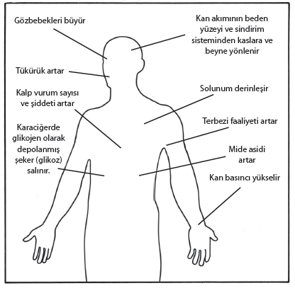

Stres konusundaki çalışmaların bazıları strese sebep olan olaylara yönelmiş, bazıları ise bu olayların fizyolojik ve psikolojik tepkileri üzerinde yoğunlaşmıştır.
Akademik olarak, stresi meydana getiren olayları “stres vericiler” (stressor), bu olaylara insanın fizyolojik ve psikolojik düzeyde verdiği tepkileri de “stres” (stress) terimi ile ifade etmeyi tercih etmekteyiz. Bu kitapta ise okumayı ve izlemeyi kolaylaştırmak amacı ile ağırlıklı olarak her iki durumu da, yani hem stres tepkisinin kendisini, hem de bu tepkiye sebep olan yaşantıları stres terimi ile ifade ettik.
Stres konusundaki ilk çalışmaların yapıldığı en önemli alanlardan biri stres vericilere karşı canlının fizyolojik tepkilerinin araştırılmasıdır.
Stres, organizmanın bedensel ve ruhsal sınırlarının tehdit edilmesi ve zorlanması ile ortaya çıkan bir durumdur. Tehdit ve zorlanmalar karşısında canlı kendini korumaya yönelik bir tepki zincirini harekete geçirme özelliğine sahiptir. Bu özellik, tehlike ile karşılaşınca “savaş veya kaç” diye adlandırılan cevabın ortaya çıkmasıdır. Bir tehlike ile yüz yüze gelen canlı, başaçıkamayacağına inandığı bu tehlikeden uzaklaşmaya çalışır, başaçıkacağına inandığı tehlike ile savaşır ve böylelikle yeni duruma bir uyum sağlar.
Organizmanın tehdit karşısında olduğu stres durumunda insanlarda hem bedensel, hem psikolojik düzeyde bir dizi olay meydana gelir. Aşağıda sayılacak bedensel düzeydeki değişikliklerin bütün insanlarda aynı basamaklardan geçmesine karşılık, psikolojik düzeyde olaylar, kişilik ve çevre gibi bireysel şartlara bağlı birçok değişiklik gösterir.
Bu tepkiler her iki düzeyde tek tek verilebileceği gibi bedensel ve psikolojik yapıların ikisinde birden de ortaya çıkabilir.

Şekil 1. Alarm tepkisinde bedende meydana gelen bazı onemli değişiklikler.
(McDonald ve Doyle 1981)
Bedensel düzeydeki stres tepkisinin özelliği, stres vericilerin türüne bağlı olmaksızın ortaya çıkan sabit bir tepki olmasıdır. Bu tepki, organizmanın dengesini bozma tehlikesi gösteren dış şarta otonom sinir sisteminden yöneltilen “kaçma veya savaşma” tepkisidir. Çünkü insan, karşılaştığı tehdit edici durumlarla mücadele ederek veya bu durumlardan uzaklaşarak kendisini korumak zorundadır. Böylece bir tehdit karşısında organizma hayatını sürdürme amacına yönelik bir dizi faaliyette bulunur.
Bu faaliyetler ve anlamları şunlardır:
• Depolanmış yağ ve şeker kana karışır (mücadeleye gerekli enerji için hammadde sağlanır).
• Solunum sayısı artar (bedene daha fazla oksijen sağlanır).
• Kanda alyuvarlar artar (beyne ve kaslara daha fazla oksijen taşınır).
• Kalp vurum sayısı artar ve kan basıncı yükselir (bedenin gereken bölgelerine gerekli kan takviyesi yapılır).
• Kan pıhtılaşma mekanizması harekete geçer (yaralanmalara karşı kan kaybını azaltmak için önlem alınır).
• Kas gerimi artar (kuvvet gerektiren işlere hazırlık yapılır).
• Sindirim yavaşlar veya durur (iç organlardaki kan, kas ve beyne geçer, bağırsak ve mesane adaleleri gevşer).
• Gözbebekleri büyür (daha fazla ışık alınarak algıyı güçlendirmeye yardımcı olunur).
• Bütün duyumlar artar (dış ortamdan daha çok haberdar olunması sağlanır).
• Hipofiz bezi uyarılır (iç salgı sisteminin etkinliği artar, böbreküstü bezinden adrenalin-noradrenalin salgılanır).
Şekil 2: Alarm doneminde enerjinin ortaya çıkmasını sağlayan hormonların yolu.
(McDonald ve Doyle 1981)
Tıp bilimlerinde bir olayın stres verici niteliğinden söz edebilmek için, hayatın devamını sağlamaya yönelik bu klasik stres tepki zincirinin oluşması gerekmektedir.
Stres, organizmanın fizik ve ruhsal sınırlarının zorlanması ve tehdit edilmesiyle ortaya çıkan bir durumdur. Organizmanın tehdit edilmesi ve bu yüzden dengenin bozulması yukarıda anlatılan ve canlılığı korumaya yönelik alarm tepkisinin yaşanmasına sebep olur. Bozulan dengenin yeniden kurulması için yeni duruma uyum sağlanması gerekir.
Bu sebeple stres tepkisi “Genel Uyum Belirtisi”[1] olarak da anılır. Genel uyum belirtisinin üç basamağı vardır. A) Alarm reaksiyonu, B) Direnç dönemi, C) Tükenme dönemi.
Şekil 3: Genel Adaptasyon Sendromunun üç dönemi (H. Selye 1977)
A) Alarm reaksiyonu: Bu dönem, insanın veya bir hayvanın dış uyaranı stres olarak algıladığı durumdur. Organizma bu dönemde şoka ve kontrşoka girer. Şok döneminde vücut ısısı ve kan basıncı düşer, kalp duracakmış gibi olur, eli ayağı çözülür. Hemen ardından kontrşok dönemi gelir. Organizma bu durumla başaçıkabilmek için aktif fizyolojik girişimlerde bulunur. Yukarıda sıraladığımız otonom faaliyet ortaya çıkar. Amaç, mücadele ederek veya kaçınarak organizmayı korumaktır.
B) Direnç dönemi: Vücudun direnci normalin üzerine çıkar. Yüz yüze olduğu bu stres verici duruma karşı direncini yükseltmiştir. Bu durumdan kaçmak veya ona uyum sağlamak zorunda olduğundan başka stres vericilere direnci düşer. Örneğin vücut aldığı bir toksine karşı direnç döneminde ise soğuk algınlığına direnci düşüktür. AIDS’li insanların genellikle basit bir soğuk algınlığından kurtulamayarak öldükleri, günümüzde sıkça rastlanan gazete haberi halini almıştır. Eğer direnç dönemi başarı ile aşılırsa beden normal koşullarına döner, başarısız olunursa beden kuvvetten düşer, çöker.
C) Tükenme dönemi: Stres verici olay çok ciddi ise ve uzun sürerse, organizma için tükenme basamağına gelinir. Bazen bu dönemde yeniden alarm dönemi reaksiyonları ortaya çıkar. Her canlının uyum yeteneği ile enerjisi farklıdır ve sınırlıdır. Uyku ve dinlenme vücudu onarabilir ama devam eden ve başaçıkılamayan stresler karşısında, denge bozulur, uyum enerjisi biter. Bunların ardından tükenme ve bitkinlik nöbetleri görülür, artık geri dönüşü olmayan izler organizmaya kazınmaktadır. Bu, hastalıklara çok açık olunan bir dönemdir.
Selye, yıkımı “adaptasyon hastalığı” olarak tanımlamıştır. Sonunda bedensel tükenme ve ölüm meydana gelir. Eğer beden savunması streslere karşı koyabiliyorsa genel uyum belirtisi iyi çalışıyor demektir. Selye’ye göre yaşlanma, sabit adaptasyon enerjisinin zamanla aşınmasıdır. Bu açıdan psiko-somatik sonuçların ortaya çıkmasında üç önemli faktör vardır. Bunlar; stresin şiddeti, kronikleşmesi ve genel uyum belirtisinin hangi aşamada olduğudur.
Selye, stresin fizyolojik etkilerini vurgulayarak bu konudaki çalışmalara önemli katkılar sağlamıştır. Ama konu laboratuvar hayvanlarından insana doğru kaydırılınca sonuçlar insanın bireysel özelliklerine bağlı olarak farklılıklar doğurmaktadır. Çünkü bir insanın çok stres verici bulduğu yaşantı, diğer insan için hiç de rahatsız edici olmayabilir. Konunun bu yanına stres ve psikolojik özellikler bölümünde değineceğiz.
Alarm reaksiyonu olarak adlandırılan dönem, organizmanın dış uyaranı stres olarak algıladığı durumdur. Bu durumda yukarıda sıraladığımız otonom faaliyetler ortaya çıkar. Amaç, mücadele ederek veya kaçınarak organizmanın iç dengesini yeniden kurmaktır.
Stres verici koşullara rağmen uyuma elverişli bir durum ortaya çıkarsa direnç oluşur. Bu durumda organizmanın alarm tepkisi sırasındaki belirtileri ortadan kalkar. Direnç döneminde vücudun direnci normalin üzerindedir. Organizma dengeye kavuşunca uyum enerjisi biter, ardından tükenme ve bitkinlik dönemi başlar. Bu dönemde de alarm döneminin özellikleri görülür. Ancak bunlar (ülserdeki hücre yıkımı gibi), geriye dönüşü olmayan izlerdir.
Bu üç basamaklı uyum süreci, belirli şartlarda bazı hastalıklara öncülük ettiği düşünülen stres mekanizmasıdır. Psiko-sosyal kökenli hastalıklar için klasik olarak kullanılan tanımlardan biri de H. Selye’nin yukarıda anlatılan stres mekanizması temeline oturtulmuştur. Kagan ve Levi’nin oluşturdukları bu model Şekil 4’te görülmektedir.
1) Psiko-sosyal uyaranların ortak etkisi olarak,belirli şartlar altında belirli kişilerde hastalığa sebep olabileceğinden şüphelenilen ve organizmayı yüksek beyin faaliyeti aracılığıyla etkileyen, kaynağını psiko-sosyal ilişkilerden alan uyaran kastedilmektedir.
2) Psiko-biyolojik programın organizmadaki belirleyicileri, genetik faktörler ile geçmiş yıllardaki çevresel etkilerdir. Bu program, örneğin bir problemi çözmek veya herhangi bir durumda çevreye uyum sağlamak konusunda kişinin, belirli bir kalıba uygun olarak (ikna etmek, bağırmak, silaha sarılmak gibi) tepki verme eğilimidir.
3) Mekanizmalar, organizmada psiko-sosyal bir uyaranın sebep olduğu bedensel reaksiyonlardır. Bu bedensel tepkiler bazı şartların yoğunluğu, sıklığı ve sürekliliği altında “hastalık ön belirtileri”nde ve doğrudan doğruya hastalığın kendisine öncülük eden çeşitli değişkenlerin varlığında ortaya çıkar. Bu mekanizmaya örnek olarak burada stres gösterilmiştir. Stres, Selye’nin tanımladığı şekilde ele alınmış ve üç temel özelliği ile değerlendirilmiştir.
a) Organizmada değişmez bir tepki zinciri oluşturur, b) Filogenetik[2] olarak en eski uyum kalıbıdır ve c) Esas olarak organizmayı bedensel bir faaliyete hazırlar (savaş veya kaç). Psiko-sosyal değişiklikler ve modern hayatın diğer şartları tarafından harekete geçirilen bu temel tepkiler, ses gibi fizik veya psikolojik bir distres veya fonksiyon bozukluğunu, hatta yapısal bir bozukluğu ortaya çıkarabilir. Özet olarak stres, belirli şartlarda hastalığa öncülük ettiğinden şüphe edilen bir mekanizmadır.
4) Hastalığın ön belirtileri; o anda bir yetersizlik (kuvvetsizlik) ortaya çıkartmamış, ancak devam ettiği takdirde problem çıkartacak olan ruhsal veya bedensel sistemlerdeki fonksiyon bozukluklarıdır.
5) Hastalık ruhsal veya bedensel fonksiyon bozukluğunun sebep olduğu yetersizliktir. “Yetersizlik”, verilmiş görevi yerine getirmek konusundaki tükenmedir. Bu her zaman esasla ilgili görevleri, normallikle ilgili görevleri ve (daha fazlası bilindiğinde de) en uygun olanla ilgili görevleri içerir.
6) Etkileşen değişkenler; kişiden gelen veya dıştan gelen ruhsal veya bedensel faktörlerdir. Bunlar mekanizma, hastalık ön belirtisi veya hastalık safhasındaki sebep-sonuç faktörünün hareketini değiştirir. “Değiştirme” kelimesi ile hastalığa uzanabilen süreci harekete geçireceği veya önleyeceği kastedilmektedir.
Şekil 4: Psiko-sosyal Kokenli Hastalıklar İcin Teorik Model
(Kagan ve Levi, 1972)
Psiko-sosyal uyaran, çevredeki değişkenleri, psiko-biyolojik program ise bireysel değişkenleri tanımlar. Her ikisi de çok sayıda değişkeni içerir. Bu iki değişkenin kesişmesi, bir başka ifadeyle o birey için o durumun stres verici olması, mekanizmanın işlemesine ve diğer etkileşen değişkenlerin devreye girmesine sebep olur. Olayın bütününe bakıldığında en karmaşık değişkenlerin, bireye bağlı değişkenler olduğu görülür.
Bedensel açıdan organizmada belirli bir uyarana karşı “özelleşmemiş” (nonspesifik) bir tepki zinciri faaliyete geçerken, psikolojik olarak olayın stres verici bir nitelik kazanması “özel” (spesifik) faktörlere bağlıdır. Tıp alanında özelleşmemiş tepkinin organizmada yarattığı çeşitli değişiklikler ayrıntılı biçimde incelenmiştir. Ancak bu arada olayın stres verici olarak değerlendirilmesine karar veren psikolojik sistemler ihmal edilmiştir. Lazarus ve Manson bu konuda çalışmalar yaparak, olayın bireye bağlı ve özelleşmiş bir tepki olduğunu ortaya koymuşlardır. Bu özelleşmeyi bireye özgü nitelikler ve zihinsel şartlar sağlamaktadır. Aynı çevre faktörleri bütün insanlar tarafından aynı biçimde yorumlanmamaktadır. Bazı insanlar için stres verici olan durumlar bazıları için böyle bir anlam taşımaz.
Şekil 5’te çeşitli sebeplerle ortaya çıkabilecek olan stres tepkilerinin, kısa ve uzun zamanda organizmayı hangi boyutlarda tehdit edebileceği gösterilmiştir. Strese karşı verilen tepkiler uzun bir zaman dilimi içinde kronik hastalıkların gelişmesine zemin hazırlar. Streslerin sıklığı ve yoğunluğu zamanı kısaltabilir. Bu hastalıklar başağrısı, yüksek tansiyon, kalp rahatsızlıkları gibi bedensel hastalıklar olabildikleri gibi, psikolojik veya zihinsel hastalıklar da olabilir. İnsanlar edinmiş oldukları davranış kalıplarına ve zihinsel özelliklerine göre stres karşısında psikolojik tepki olarak geri çekilme, kabullenme, karşı koyma veya korku, endişe, depresyon gibi duygusal problemler geliştirebilirler. Öte yandan dikkatin azalması, zihni bir konu üzerinde toplama güçlüğü, çeşitli konular arasında ilişki kurma güçlüğü, aşırı unutkanlık, obsessif (takıntılı) düşünceler zihinsel düzeydeki problemlerden bazılarıdır.
Şekil 5: Stresle Başa Cıkma Programından (Nathan ve Charlesworth, 1980)
Görüldüğü gibi stresler, çeşitli düzeylerde ortaya çıkmasına zemin hazırladıkları problemlerle, kişinin verimliliğini düşürür, hayattan aldığı zevki azaltır ve yakın çevre ile olan duygusal ilişkilerini zedeler.
Stresten korunma yolları
Psikolojik anlamda stres, kişiye özgü ve biricik olan bireysel bütünlüğü zorlayıcı ve bozucu etkenlerdir. İnsan stresler karşısında psikolojik ve sosyal bütünlüğünü korumak amacındadır. Bu korunmayı hem bilinçdışı mekanizmaları, hem de bilinçli çabaları ile yapar.
Kişiliği koruyan mekanizmalardan birincisi “Ben savunma mekanizmaları” olarak tanınan, bilinçdışı çalışan, gerçeği bozan korunma yollarıdır. Bütün temel psikoloji kitaplarında tanımlanan bu bilinçdışı savunma mekanizmalarının en çok kullanılanları, bastırma, unutma, karşı tepki geliştirme, yansıtma, yer değiştirme ve gerilemedir.
Kişiliği koruyucu diğer mekanizmalar bilinç ve çaba gerektiren gayretleri içerir. Stres karşısında bilinçli sistemlerin harekete geçmesiyle daha çok bilgi edinme, anlama, algı alanını genişletme ve değerlendirme, farklı şartlar deneme, yeni çözümler arama, yapıcı düşünceye yönelebilme gibi karmaşık zihinsel süreçler etkinlik gösterir. Bu süreçlerin korunmayı sağlayıcı biçimde yönlendirilmeleri kitabın “Stresle Başaçıkma Yolları” bölümünde ayrıntılı olarak anlatılmıştır.
Stres altında insan
Kişi bireysel bütünlüğüne yönelen tehditlere karşı, özellikle zihinsel düzeyde başarılı bir mücadele veremezse, başaçıkamadığı streslerin biriken ve yoğunlaşan etkileri sonucu davranış düzeyine yansıyan bazı belirtiler şunlardır:
a) Önemli veya önemsiz, daha önceden kolaylıkla verilebilen kararları vermekte güçlük,
b) Değersizlik, yetersizlik, güvensizlik ve terkedilmişlik duyguları,
c) Alışılmış davranış biçimlerinde önemli değişiklik,
d) En iyi olanı değil, garanti olanı seçmek,
e) Uygun olmayan durumlarda ortaya çıkan öfke, düşmanlık ve kızgınlık dalgaları,
f) Sigara ve içki içme eğiliminin artması,
g) Kişisel hata ve başarısızlıkları sürekli düşünmek,
h) Aşırı hayal kurmak, sık sık düşünceye dalıp gitmek,
ı) Duygusal ve cinsel hayatta düşüncesiz davranışlar,
j) Birlikte olunan kimselere aşırı güven (veya güvensizlik),
k) Alışılmıştan daha titiz veya işin gerektirdiğinden daha fazla çalışmak,
l) Konuşma ve yazıda belirsizlik ve kopukluk,
m) Nispeten önemsiz konularda aşırı endişelenme veya tam tersine gerçek problemler karşısında ilgisizlik ve kayıtsızlık,
n) Sağlığa aşırı ilgi,
o) Uyku bozukluğu (zor uyuma veya gece boyu sık sık uyanma),
p) Ölüm ve intihar fikirlerinin sık sık tekrarlanması.
Öte yandan bireyin streslere açık olmasında rol oynayan iki faktör vardır. Bunlardan ilki streslerle karşılaşmanın sıklığı ve karşılaşılan stresin süre ve anlamı bakımından niteliğidir. Bireyin strese açık oluşunda rol oynayan ikinci faktör streslerle başaçıkabilmek konusundaki kişilik donanımıdır.